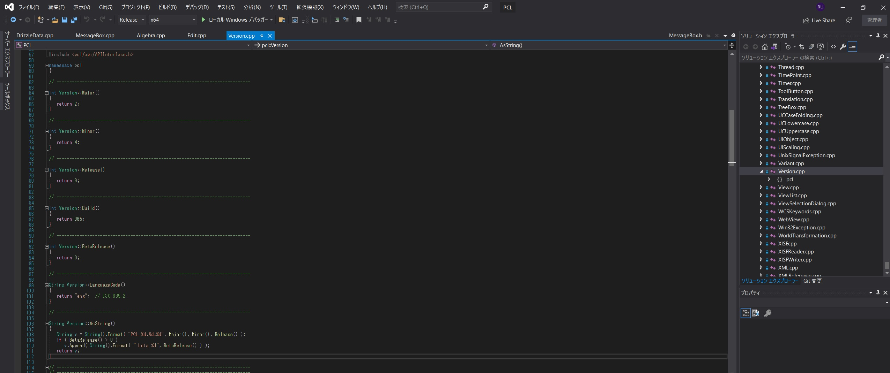
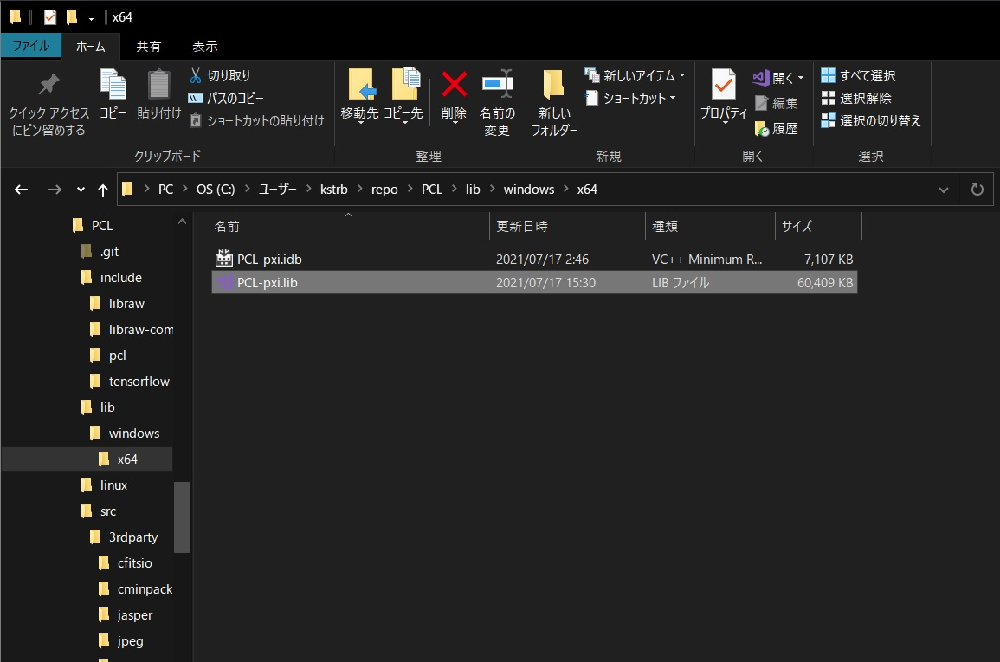
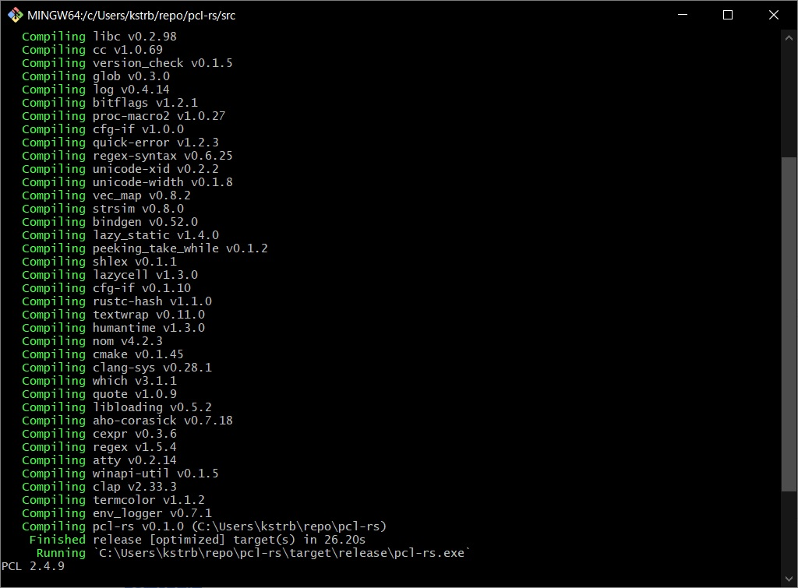

<!DOCTYPE html>
<html>

<head><meta name="generator" content="Hexo 3.8.0">
  <meta charset="utf-8">
  
    <title>
      
        PixInsight Class Library を自作プログラムから呼び出してみる | 
            ほしよみ大学生のブログ
    </title>
    <meta name="viewport" content="width=device-width">
    <meta name="description" content="あいさつこんにちは．突然ですが，皆さんは PixInsight Class Library（PCL）をご存知でしょうか．PixInsight 内部の機能がプログラムの形で提供されています．  The PixInsight Class Library (PCL) is a C++ development framework to build PixInsight modules.PixInsight">
<meta name="keywords" content="画像処理,Rust,C++">
<meta property="og:type" content="article">
<meta property="og:title" content="PixInsight Class Library を自作プログラムから呼び出してみる">
<meta property="og:url" content="http://dabokun.github.io/2021/07/17/00000058-call-pcl/index.html">
<meta property="og:site_name" content="ほしよみ大学生のブログ">
<meta property="og:description" content="あいさつこんにちは．突然ですが，皆さんは PixInsight Class Library（PCL）をご存知でしょうか．PixInsight 内部の機能がプログラムの形で提供されています．  The PixInsight Class Library (PCL) is a C++ development framework to build PixInsight modules.PixInsight">
<meta property="og:locale" content="ja">
<meta property="og:image" content="http://dabokun.github.io/2021/07/17/00000058-call-pcl/card.jpg">
<meta property="og:updated_time" content="2021-07-17T14:52:54.285Z">
<meta name="twitter:card" content="summary_large_image">
<meta name="twitter:title" content="PixInsight Class Library を自作プログラムから呼び出してみる">
<meta name="twitter:description" content="あいさつこんにちは．突然ですが，皆さんは PixInsight Class Library（PCL）をご存知でしょうか．PixInsight 内部の機能がプログラムの形で提供されています．  The PixInsight Class Library (PCL) is a C++ development framework to build PixInsight modules.PixInsight">
<meta name="twitter:image" content="http://dabokun.github.io/2021/07/17/00000058-call-pcl/card.jpg">
<meta name="twitter:creator" content="@dabo_pic">
      
        <link rel="alternative" href="/atom.xml" title="ほしよみ大学生のブログ" type="application/atom+xml">
        
          
            <link rel="icon" href="/images/favicon.png">
            
              <link rel="stylesheet" href="/css/style.css">
                <!--[if lt IE 9]><script src="//html5shiv.googlecode.com/svn/trunk/html5.js"></script><![endif]-->
                
                  <script data-ad-client="ca-pub-1350688970555904" async src="https://pagead2.googlesyndication.com/pagead/js/adsbygoogle.js"></script>
</head></html>
<body>
  <div id="container">
    <div class="mobile-nav-panel">
	<i class="icon-reorder icon-large"></i>
</div>
<header id="header">
	<h1 class="blog-title">
		<a href="/">ほしよみ大学生のブログ</a>
	</h1>
	<nav class="nav">
		<ul>
			<li><a href="/">Home</a></li><li><a href="/categories">Categories</a></li><li><a href="/tags">Tags</a></li><li><a href="/archives">Archives</a></li><li><a href="/about">About</a></li><li><a href="/work">Work</a></li>
			<li><a id="nav-search-btn" class="nav-icon" title="Search"></a></li>
			<li><a href="https://github.com/dabokun"></a>
			</li>
			<li><a href="https://twitter.com/dabo_pic"></a></li>
			<li><a href="/atom.xml" id="nav-rss-link" class="nav-icon" title="RSS Feed"></a>
			</li>
		</ul>
	</nav>
	<div id="search-form-wrap">
		<form action="//google.com/search" method="get" accept-charset="UTF-8" class="search-form"><input type="search" name="q" class="search-form-input" placeholder="Search"><button type="submit" class="search-form-submit">&#xF002;</button><input type="hidden" name="sitesearch" value="http://dabokun.github.io"></form>
	</div>
</header>
    <div id="main">
      <article id="post-00000058-call-pcl" class="post">
	<footer class="entry-meta-header">
		<span class="meta-elements date">
			<a href="/2021/07/17/00000058-call-pcl/" class="article-date">
  <time datetime="2021-07-17T06:46:31.000Z" itemprop="datePublished">2021-07-17</time>
</a>
		</span>
		<span class="meta-elements author">astr0dab0</span>
		<div class="commentscount">
			
			<a href="http://dabokun.github.io/2021/07/17/00000058-call-pcl/#disqus_thread" class="article-comment-link">Comments</a>
			
		</div>
	</footer>
	
	<header class="entry-header">
		
  
    <h1 class="article-title entry-title" itemprop="name">
      PixInsight Class Library を自作プログラムから呼び出してみる
    </h1>
  

	</header>
	<div class="entry-content">
		
		
		<div id="toc" class="toc-article">
			<p class="toc-title">目次</p>
			<ol class="toc"><li class="toc-item toc-level-3"><a class="toc-link" href="#あいさつ"><span class="toc-number">1.</span> <span class="toc-text">あいさつ</span></a></li><li class="toc-item toc-level-3"><a class="toc-link" href="#やり方"><span class="toc-number">2.</span> <span class="toc-text">やり方</span></a><ol class="toc-child"><li class="toc-item toc-level-4"><a class="toc-link" href="#呼び出したい機能が格納されたスタティックライブラリを用意"><span class="toc-number">2.1.</span> <span class="toc-text">呼び出したい機能が格納されたスタティックライブラリを用意</span></a></li><li class="toc-item toc-level-4"><a class="toc-link" href="#C-側のインタフェースを用意，PCL-とリンク，Rust-バインディングの自動生成"><span class="toc-number">2.2.</span> <span class="toc-text">C++ 側のインタフェースを用意，PCL とリンク，Rust バインディングの自動生成</span></a></li><li class="toc-item toc-level-4"><a class="toc-link" href="#Rust-の本番アプリケーションから呼出し"><span class="toc-number">2.3.</span> <span class="toc-text">Rust の本番アプリケーションから呼出し</span></a></li></ol></li><li class="toc-item toc-level-3"><a class="toc-link" href="#まとめ"><span class="toc-number">3.</span> <span class="toc-text">まとめ</span></a></li></ol>
		</div>
		
		<h3 id="あいさつ"><a href="#あいさつ" class="headerlink" title="あいさつ"></a>あいさつ</h3><p>こんにちは．突然ですが，皆さんは PixInsight Class Library（PCL）をご存知でしょうか．PixInsight 内部の機能がプログラムの形で提供されています．</p>
<blockquote>
<p>The PixInsight Class Library (PCL) is a C++ development framework to build PixInsight modules.<br>PixInsight modules are special shared libraries (.so files on FreeBSD and Linux; .dylib under macOS; .dll files on Windows) that communicate with the PixInsight core application through a high-level API provided by PCL. Along with a core communication API, PCL includes a comprehensive set of image processing algorithms, ranging from geometrical transformations to multiscale analysis algorithms, most of them available as multithreaded parallel implementations. PCL provides also rigorous and efficient implementations of essential astronomical algorithms, including state-of-the-art solar system ephemerides, vector astrometry, and reduction of positions of solar system and stellar objects.<br><a href="https://pixinsight.com/developer/pcl/" target="_blank" rel="noopener">PixInsight Class Library</a>― by Pleiades Astrophoto S.L.</p>
</blockquote>
<p>私は普段 Rust と呼ばれるちょっとモダンなプログラミング言語を使っているのですが，C++ との Foreign Function Interface（FFI）を学んでいるうちに，あれ，これ PCL も呼べるんじゃね？ということに気づいたので，せっかくならやってみることにしました．</p>
<a id="more"></a>
<h3 id="やり方"><a href="#やり方" class="headerlink" title="やり方"></a>やり方</h3><p>PCL には Hello World のようなサンプルがないので，PCL から Version を表示する機能を呼んでやることを目標にします．<br>↑のような PCL のコードを呼び出したいです．</p>
<p>以下にやり方をつらつらと書いていきます．<br>OS は Windows 10 で，Git と Rust コンパイラ，CMake，Visual Studio（2019 Community）がインストールされていることが前提です．<br>Rust から C++ を呼ぶのは若干めんどくさく，</p>
<ol>
<li><p>呼び出したい機能が格納されたスタティックライブラリを用意する．</p>
</li>
<li><p>C++ 側のインタフェースを用意して，1.のライブラリとリンクしてビルドする．（今回はCMakeを使います）</p>
</li>
<li><p>C++ 側のヘッダーから Rust のバインディングを自動生成する．（bindgen crate を使います）</p>
</li>
<li><p>Rust の本番アプリケーションから呼び出す．</p>
</li>
</ol>
<p>みたいな流れになります．<br>2，3については，Rust の build script を使ってビルド時によしなにやってくれるようにします．<br>順番にやっていきましょう．</p>
<h4 id="呼び出したい機能が格納されたスタティックライブラリを用意"><a href="#呼び出したい機能が格納されたスタティックライブラリを用意" class="headerlink" title="呼び出したい機能が格納されたスタティックライブラリを用意"></a>呼び出したい機能が格納されたスタティックライブラリを用意</h4><p>呼び出したい機能が格納されたスタティックライブラリとは，PCL のことです．ただ，PCL はソースコードの形で提供されているため，頑張ってビルドします．<br>まず PCL リポジトリをクローン（ローカルにダウンロード）<br><figure class="highlight plain"><table><tr><td class="gutter"><pre><span class="line">1</span><br></pre></td><td class="code"><pre><span class="line">$ git clone https://gitlab.com/pixinsight/PCL/</span><br></pre></td></tr></table></figure></p>
<p>PCLDIR, PCLBINDIR64, PCLLIBDIR64, PCLINCDIR, PCLSRCDIRにパスを設定．（<a href="https://gitlab.com/pixinsight/PCL/" target="_blank" rel="noopener">こちら</a>を参考に）<br>Visual Studio 2019 を開き，\PCL\src\pcl\windows\vc16\PCL.vcxproj を開く．ビルドの設定をRelease, x64にします．そのままやるとこの後エラーが出るので，以下のコードをちょっと修正しました．<br><figure class="highlight c++"><table><tr><td class="gutter"><pre><span class="line">1</span><br><span class="line">2</span><br><span class="line">3</span><br><span class="line">4</span><br><span class="line">5</span><br><span class="line">6</span><br><span class="line">7</span><br><span class="line">8</span><br><span class="line">9</span><br><span class="line">10</span><br><span class="line">11</span><br></pre></td><td class="code"><pre><span class="line"><span class="comment">//DrizzleData.cpp 481行目あたり，</span></span><br><span class="line">  <span class="keyword">else</span> <span class="keyword">if</span> ( element.Name() == <span class="string">"CFASourceImage"</span> )</span><br><span class="line">  &#123;</span><br><span class="line">    <span class="comment">// optional</span></span><br><span class="line">    m_cfaSourceFilePath = element.Text().Trimmed();</span><br><span class="line">    m_cfaSourcePattern = element.AttributeValue( <span class="string">"pattern"</span> );</span><br><span class="line">    String channel = element.AttributeValue( <span class="string">"channel"</span> );</span><br><span class="line">    <span class="keyword">if</span> ( !channel.IsEmpty() )</span><br><span class="line">      <span class="comment">//intへのキャストを追加，たぶんオーバーロードがうまくいってない</span></span><br><span class="line">      m_cfaSourceChannel = Range( (<span class="keyword">int</span>)channel.ToInt(), <span class="number">-1</span>, int32_max );</span><br><span class="line">  &#125;</span><br></pre></td></tr></table></figure></p>
<p>コンパイラによってはうまく動くのかもしれませんが，少なくとも自分の環境では無理でしたので，今のとここのような修正になっています．<br>ビルドすると，PCLLIBDIR64 に設定したパスにスタティックライブラリができます．</p>
<p></p>
<h4 id="C-側のインタフェースを用意，PCL-とリンク，Rust-バインディングの自動生成"><a href="#C-側のインタフェースを用意，PCL-とリンク，Rust-バインディングの自動生成" class="headerlink" title="C++ 側のインタフェースを用意，PCL とリンク，Rust バインディングの自動生成"></a>C++ 側のインタフェースを用意，PCL とリンク，Rust バインディングの自動生成</h4><p>次に，C++ 側のインタフェースを用意します．<br><figure class="highlight c++"><table><tr><td class="gutter"><pre><span class="line">1</span><br><span class="line">2</span><br><span class="line">3</span><br><span class="line">4</span><br><span class="line">5</span><br><span class="line">6</span><br><span class="line">7</span><br></pre></td><td class="code"><pre><span class="line"><span class="comment">//pcl_cpp.hpp</span></span><br><span class="line"><span class="class"><span class="keyword">class</span> <span class="title">Pcl_rs</span></span></span><br><span class="line"><span class="class">&#123;</span></span><br><span class="line"><span class="keyword">public</span>:</span><br><span class="line">    Pcl_rs();</span><br><span class="line">    <span class="function"><span class="keyword">void</span> <span class="title">print_pcl_version</span><span class="params">(<span class="keyword">void</span>)</span></span>;</span><br><span class="line">&#125;;</span><br></pre></td></tr></table></figure></p>
<figure class="highlight c++"><table><tr><td class="gutter"><pre><span class="line">1</span><br><span class="line">2</span><br><span class="line">3</span><br><span class="line">4</span><br><span class="line">5</span><br><span class="line">6</span><br><span class="line">7</span><br><span class="line">8</span><br><span class="line">9</span><br><span class="line">10</span><br><span class="line">11</span><br><span class="line">12</span><br><span class="line">13</span><br><span class="line">14</span><br><span class="line">15</span><br></pre></td><td class="code"><pre><span class="line"><span class="comment">//pcl_cpp.cpp</span></span><br><span class="line"><span class="meta">#<span class="meta-keyword">define</span> __PCL_WINDOWS</span></span><br><span class="line"><span class="comment">// include the local headers</span></span><br><span class="line"><span class="meta">#<span class="meta-keyword">include</span> <span class="meta-string">&lt;iostream&gt;</span></span></span><br><span class="line"><span class="meta">#<span class="meta-keyword">include</span> <span class="meta-string">&lt;pcl/Version.h&gt;</span></span></span><br><span class="line"><span class="meta">#<span class="meta-keyword">include</span> <span class="meta-string">"pcl_cpp.hpp"</span></span></span><br><span class="line"></span><br><span class="line">Pcl_rs::Pcl_rs() &#123;&#125;</span><br><span class="line"></span><br><span class="line"><span class="keyword">void</span> Pcl_rs::print_pcl_version(<span class="keyword">void</span>)</span><br><span class="line">&#123;</span><br><span class="line">  <span class="comment">//ここでpclの機能を実際に呼んでます</span></span><br><span class="line">  <span class="built_in">std</span>::<span class="built_in">cout</span> &lt;&lt; pcl::Version::AsString() &lt;&lt; <span class="built_in">std</span>::<span class="built_in">endl</span>;</span><br><span class="line">  <span class="keyword">return</span>;</span><br><span class="line">&#125;</span><br></pre></td></tr></table></figure>
<p>pcl_cpp.cpp は CMake を使ってビルドするので，CMakeList.txtを用意します．<br><figure class="highlight cmake"><table><tr><td class="gutter"><pre><span class="line">1</span><br><span class="line">2</span><br><span class="line">3</span><br><span class="line">4</span><br><span class="line">5</span><br><span class="line">6</span><br><span class="line">7</span><br><span class="line">8</span><br><span class="line">9</span><br><span class="line">10</span><br><span class="line">11</span><br><span class="line">12</span><br><span class="line">13</span><br><span class="line">14</span><br><span class="line">15</span><br><span class="line">16</span><br><span class="line">17</span><br><span class="line">18</span><br><span class="line">19</span><br><span class="line">20</span><br></pre></td><td class="code"><pre><span class="line"><span class="comment">#CMakeList.txt</span></span><br><span class="line"><span class="keyword">cmake_minimum_required</span>(VERSION <span class="number">3.5</span>)</span><br><span class="line"></span><br><span class="line"><span class="keyword">project</span>(pcl_cpp)</span><br><span class="line"><span class="keyword">set</span>(CMAKE_CXX_STANDARD <span class="number">11</span>)</span><br><span class="line"><span class="keyword">set</span>(<span class="keyword">TARGET</span> pcl_cpp)</span><br><span class="line"></span><br><span class="line"><span class="comment">#自身の環境によって変更してください</span></span><br><span class="line"><span class="keyword">include_directories</span>(/path/to/PCLINCDIR)</span><br><span class="line"></span><br><span class="line"><span class="keyword">add_library</span>(<span class="variable">$&#123;TARGET&#125;</span></span><br><span class="line">  STATIC</span><br><span class="line">    pcl_cpp.cpp</span><br><span class="line">)</span><br><span class="line"></span><br><span class="line"><span class="keyword">target_link_libraries</span>(<span class="variable">$&#123;TARGET&#125;</span></span><br><span class="line">  PRIVATE</span><br><span class="line">)</span><br><span class="line"></span><br><span class="line"><span class="keyword">install</span> (TARGETS <span class="variable">$&#123;TARGET&#125;</span> DESTINATION .)</span><br></pre></td></tr></table></figure></p>
<p>Rust の ライブラリプロジェクトを用意します．これが本番アプリケーションという体です．<br>ライブラリプロジェクトなので，別のプログラムに移植することは簡単です．</p>
<figure class="highlight plain"><table><tr><td class="gutter"><pre><span class="line">1</span><br></pre></td><td class="code"><pre><span class="line">$ cargo new pcl-rs --lib //ライブラリプロジェクトを作る</span><br></pre></td></tr></table></figure>
<p>上に書いた3つを以下のように配置します．</p>
<figure class="highlight plain"><table><tr><td class="gutter"><pre><span class="line">1</span><br><span class="line">2</span><br><span class="line">3</span><br><span class="line">4</span><br><span class="line">5</span><br><span class="line">6</span><br><span class="line">7</span><br><span class="line">8</span><br><span class="line">9</span><br><span class="line">10</span><br><span class="line">11</span><br><span class="line">12</span><br></pre></td><td class="code"><pre><span class="line">├─pcl-rs</span><br><span class="line">│  │  build.rs</span><br><span class="line">│  │  Cargo.toml</span><br><span class="line">│  │</span><br><span class="line">│  ├─src</span><br><span class="line">│  │  │  lib.rs</span><br><span class="line">│  │  │  main.rs</span><br><span class="line">│  │  │  </span><br><span class="line">│  │  └─pcl_cpp</span><br><span class="line">│  │          CMakeLists.txt</span><br><span class="line">│  │          pcl_cpp.cpp</span><br><span class="line">│  │          pcl_cpp.hpp</span><br></pre></td></tr></table></figure>
<p>触れていないファイルがいつかありますが後述します．<br>build.rs が 本番アプリケーションのビルド時に走るスクリプトです．ここでCMake，bindgenを使って，Rust から pcl_cpp.cpp の機能を使えるようにします．<br>まず Cargo.toml に依存ライブラリを記載．<br><figure class="highlight toml"><table><tr><td class="gutter"><pre><span class="line">1</span><br><span class="line">2</span><br><span class="line">3</span><br><span class="line">4</span><br><span class="line">5</span><br><span class="line">6</span><br><span class="line">7</span><br><span class="line">8</span><br><span class="line">9</span><br></pre></td><td class="code"><pre><span class="line"><span class="comment"># Cargo.toml</span></span><br><span class="line"><span class="section">[dependencies]</span></span><br><span class="line"><span class="attr">libc</span> = <span class="string">"0.2.51"</span></span><br><span class="line"></span><br><span class="line"><span class="section">[build-dependencies]</span></span><br><span class="line"><span class="attr">cc</span> = <span class="string">"1.0.35"</span></span><br><span class="line"><span class="attr">bindgen</span> = <span class="string">"0.52"</span></span><br><span class="line"><span class="attr">libc</span> = <span class="string">"0.2.51"</span></span><br><span class="line"><span class="attr">cmake</span> = <span class="string">"0.1"</span></span><br></pre></td></tr></table></figure></p>
<p>ビルドスクリプトを書いていきます．</p>
<figure class="highlight rust"><table><tr><td class="gutter"><pre><span class="line">1</span><br><span class="line">2</span><br><span class="line">3</span><br><span class="line">4</span><br><span class="line">5</span><br><span class="line">6</span><br><span class="line">7</span><br><span class="line">8</span><br><span class="line">9</span><br><span class="line">10</span><br><span class="line">11</span><br><span class="line">12</span><br><span class="line">13</span><br><span class="line">14</span><br><span class="line">15</span><br><span class="line">16</span><br><span class="line">17</span><br><span class="line">18</span><br><span class="line">19</span><br><span class="line">20</span><br><span class="line">21</span><br><span class="line">22</span><br><span class="line">23</span><br><span class="line">24</span><br><span class="line">25</span><br><span class="line">26</span><br><span class="line">27</span><br><span class="line">28</span><br><span class="line">29</span><br><span class="line">30</span><br><span class="line">31</span><br><span class="line">32</span><br><span class="line">33</span><br><span class="line">34</span><br><span class="line">35</span><br><span class="line">36</span><br><span class="line">37</span><br><span class="line">38</span><br><span class="line">39</span><br><span class="line">40</span><br><span class="line">41</span><br><span class="line">42</span><br><span class="line">43</span><br><span class="line">44</span><br><span class="line">45</span><br><span class="line">46</span><br></pre></td><td class="code"><pre><span class="line"><span class="comment">//build.rs</span></span><br><span class="line"><span class="keyword">extern</span> <span class="keyword">crate</span> bindgen;</span><br><span class="line"></span><br><span class="line"><span class="keyword">use</span> cmake;</span><br><span class="line"><span class="keyword">use</span> std::env;</span><br><span class="line"><span class="keyword">use</span> std::path::PathBuf;</span><br><span class="line"></span><br><span class="line"><span class="function"><span class="keyword">fn</span> <span class="title">main</span></span>() &#123;</span><br><span class="line">    <span class="comment">//pcl_cpp.cppかpcl_hpp.cppが変更された場合に走る</span></span><br><span class="line">    <span class="built_in">println!</span>(<span class="string">"cargo:rerun-if-changed=src/pcl_cpp/pcl_cpp.cpp"</span>);</span><br><span class="line">    <span class="built_in">println!</span>(<span class="string">"cargo:rerun-if-changed=src/pcl_cpp/pcl_cpp.hpp"</span>);</span><br><span class="line">    </span><br><span class="line">    <span class="keyword">let</span> out_path = PathBuf::from(env::var(<span class="string">"OUT_DIR"</span>).unwrap());</span><br><span class="line">    <span class="keyword">let</span> out_path = out_path.to_str().unwrap();</span><br><span class="line"></span><br><span class="line">    <span class="comment">//リンクするライブラリを探すパス</span></span><br><span class="line">    <span class="built_in">println!</span>(<span class="string">"cargo:rustc-link-search=&#123;&#125;/build/Release/"</span>, out_path);</span><br><span class="line">    <span class="comment">//自身の環境によって変更してください</span></span><br><span class="line">    <span class="built_in">println!</span>(<span class="string">"cargo:rustc-link-search=native=/path/to/PCLLIBDIR64"</span>);</span><br><span class="line">    <span class="comment">//Windows でビルドする場合に必要</span></span><br><span class="line">    <span class="comment">//User32.Lib の場所を指定</span></span><br><span class="line">    <span class="built_in">println!</span>(<span class="string">"cargo:rustc-link-search=native=C:/Program Files (x86)/Windows Kits/10/Lib/10.0.19041.0/um/x64"</span>);</span><br><span class="line">    </span><br><span class="line">    <span class="comment">//リンクするライブラリ</span></span><br><span class="line">    <span class="built_in">println!</span>(<span class="string">"cargo:rustc-link-lib=static=pcl_cpp"</span>);</span><br><span class="line">    <span class="built_in">println!</span>(<span class="string">"cargo:rustc-link-lib=static=PCL-pxi"</span>);</span><br><span class="line">    <span class="comment">//Windows でビルドする場合に必要</span></span><br><span class="line">    <span class="built_in">println!</span>(<span class="string">"cargo:rustc-link-lib=static=User32"</span>);</span><br><span class="line"></span><br><span class="line">    <span class="keyword">let</span> out_path = PathBuf::from(env::var(<span class="string">"OUT_DIR"</span>).unwrap());</span><br><span class="line"></span><br><span class="line">    <span class="keyword">let</span> _dst = cmake::Config::new(<span class="string">"src/pcl_cpp"</span>).generator(<span class="string">"Visual Studio 16 2019"</span>).build(); </span><br><span class="line">    </span><br><span class="line">    <span class="comment">//pcl_cpp.hpp からバインディング生成</span></span><br><span class="line">    <span class="keyword">let</span> bindings = bindgen::Builder::<span class="keyword">default</span>()</span><br><span class="line">        .clang_arg(<span class="string">"-x"</span>)</span><br><span class="line">        .clang_arg(<span class="string">"c++"</span>)</span><br><span class="line">        .header(<span class="string">"src/pcl_cpp/pcl_cpp.hpp"</span>)</span><br><span class="line">        .parse_callbacks(<span class="built_in">Box</span>::new(bindgen::CargoCallbacks))</span><br><span class="line">        .generate()</span><br><span class="line">        .expect(<span class="string">"Unable to generate bindings"</span>);</span><br><span class="line"></span><br><span class="line">    bindings</span><br><span class="line">        .write_to_file(out_path.join(<span class="string">"pcl_cpp.rs"</span>))</span><br><span class="line">        .expect(<span class="string">"Couldn't write bindings!"</span>);</span><br><span class="line">&#125;</span><br></pre></td></tr></table></figure>
<p>スクリプトの細かい説明は省きますが，ビルドスクリプトが走ると，OUT_DIR で設定されたパス以下に pcl_cpp.rs バインディングが自動生成されます．<br>ここに，C++側のクラス，メソッドの情報などが入っています．</p>
<h4 id="Rust-の本番アプリケーションから呼出し"><a href="#Rust-の本番アプリケーションから呼出し" class="headerlink" title="Rust の本番アプリケーションから呼出し"></a>Rust の本番アプリケーションから呼出し</h4><p>あとは Rust 側のライブラリでこのバインディングを読み込めばOKです．<br>lib.rs に以下を書いて，<br><figure class="highlight rust"><table><tr><td class="gutter"><pre><span class="line">1</span><br><span class="line">2</span><br><span class="line">3</span><br><span class="line">4</span><br><span class="line">5</span><br><span class="line">6</span><br><span class="line">7</span><br></pre></td><td class="code"><pre><span class="line"><span class="comment">//lib.rs</span></span><br><span class="line"><span class="meta">#![allow(non_upper_case_globals)]</span></span><br><span class="line"><span class="meta">#![allow(non_camel_case_types)]</span></span><br><span class="line"><span class="meta">#![allow(non_snake_case)]</span></span><br><span class="line"><span class="meta">#![allow(dead_code)]</span></span><br><span class="line">include!(<span class="built_in">concat!</span>(<span class="built_in">env!</span>(<span class="string">"OUT_DIR"</span>), <span class="string">"/pcl_cpp.rs"</span>));</span><br><span class="line"><span class="comment">//自動生成されたバインディングを読み込む</span></span><br></pre></td></tr></table></figure></p>
<p>main アプリケーションで実際に使ってみます．</p>
<figure class="highlight rust"><table><tr><td class="gutter"><pre><span class="line">1</span><br><span class="line">2</span><br><span class="line">3</span><br><span class="line">4</span><br><span class="line">5</span><br><span class="line">6</span><br><span class="line">7</span><br><span class="line">8</span><br><span class="line">9</span><br><span class="line">10</span><br></pre></td><td class="code"><pre><span class="line"><span class="comment">//main.rs</span></span><br><span class="line"><span class="keyword">use</span> pcl_rs::Pcl_rs;</span><br><span class="line"></span><br><span class="line"><span class="function"><span class="keyword">fn</span> <span class="title">main</span></span>() &#123;</span><br><span class="line">  <span class="comment">//本番アプリケーションではこのように unsafe ブロックで囲んで使う</span></span><br><span class="line">  <span class="keyword">unsafe</span> &#123;</span><br><span class="line">      <span class="keyword">let</span> <span class="keyword">mut</span> my_pcl = Pcl_rs::new();</span><br><span class="line">      my_pcl.print_pcl_version();</span><br><span class="line">  &#125;</span><br><span class="line">&#125;</span><br></pre></td></tr></table></figure>
<p>Rust でビルドすると…</p>
<p></p>
<p>Rust で作ったライブラリから PCL を呼び出して，バージョンが出ました！めでたしめでたし．</p>
<h3 id="まとめ"><a href="#まとめ" class="headerlink" title="まとめ"></a>まとめ</h3><p>まだ PCL でどれだけのことができるのかわかっていませんが，Rust 側とのデータのコミュニケーションができれば，PCL で提供されている数多くの機能を自作プログラムから呼び出して利用することができるようになりました．<br>これは実質 PixInsight のすべての力を手に入れたと言っても過言ではない…？<br>今回のテクニックは，PCL 以外にも C++ で書かれたライブラリを利用する時に有用です．<br>また何か発展があればブログに書きたいと思います！<br>それでは．</p>

		
	</div>
	<footer class="article-footer">
		<a href="https://twitter.com/intent/tweet?text=PixInsight%20Class%20Library%20%E3%82%92%E8%87%AA%E4%BD%9C%E3%83%97%E3%83%AD%E3%82%B0%E3%83%A9%E3%83%A0%E3%81%8B%E3%82%89%E5%91%BC%E3%81%B3%E5%87%BA%E3%81%97%E3%81%A6%E3%81%BF%E3%82%8B｜%E3%81%BB%E3%81%97%E3%82%88%E3%81%BF%E5%A4%A7%E5%AD%A6%E7%94%9F%E3%81%AE%E3%83%96%E3%83%AD%E3%82%B0&url=http://dabokun.github.io/2021/07/17/00000058-call-pcl/" class="twitter-share-button" target="_blank" title="Twitter"></a>
		<script async src="https://platform.twitter.com/widgets.js" charset="utf-8"></script>

		<div id="fb-root"></div>
		<script async defer crossorigin="anonymous" src="https://connect.facebook.net/ja_JP/sdk.js#xfbml=1&version=v4.0"></script>
		<div class="fb-share-button" data-href="http://dabokun.github.io/2021/07/17/00000058-call-pcl/" data-layout="button_count" data-size="small"><a target="_blank" href="https://www.facebook.com/sharer/sharer.php?u=https%3A%2F%2Fdabokun.github.io%2F&amp;src=sdkpreparse" class="fb-xfbml-parse-ignore">シェア</a></div>
	</footer>
	<footer class="entry-footer">
		<div class="entry-meta-footer">
			<span class="category">
				
  <div class="article-category">
    <a class="article-category-link" href="/categories/processing/">画像処理</a>
  </div>

			</span>
			<span class=" tags">
				
  <ul class="article-tag-list"><li class="article-tag-list-item"><a class="article-tag-list-link" href="/tags/cpp/">C++</a></li><li class="article-tag-list-item"><a class="article-tag-list-link" href="/tags/rust/">Rust</a></li><li class="article-tag-list-item"><a class="article-tag-list-link" href="/tags/processing/">画像処理</a></li></ul>

			</span>
		</div>
	</footer>
	
	
<nav id="article-nav">
  
    <a href="/2999/12/31/99999999-notice/" id="article-nav-newer" class="article-nav-link-wrap">
      <strong class="article-nav-caption">Newer</strong>
      <div class="article-nav-title">
        
          お知らせ
        
      </div>
    </a>
  
  
    <a href="/2021/06/27/00000057-douga-01/" id="article-nav-older" class="article-nav-link-wrap">
      <strong class="article-nav-caption">Older</strong>
      <div class="article-nav-title">
        
          動画投稿デビュー（のちょっと裏話）
        
      </div>
    </a>
  
</nav>

	
</article>


<section id="comments">
	<div id="disqus_thread">
		<noscript>Please enable JavaScript to view the <a href="//disqus.com/?ref_noscript">comments powered by
				Disqus.</a></noscript>
	</div>
</section>

    </div>
    <div class="mb-search">
  <form action="//google.com/search" method="get" accept-charset="utf-8">
    <input type="search" name="q" results="0" placeholder="Search">
    <input type="hidden" name="q" value="site:dabokun.github.io">
  </form>
</div>
<footer id="footer">
	<h1 class="footer-blog-title">
		<a href="/">ほしよみ大学生のブログ</a>
	</h1>
	<span class="copyright">
		&copy; 2021 astr0dab0<br>
		Modify from <a href="http://sanographix.github.io/tumblr/apollo/" target="_blank">Apollo</a> theme, designed by <a href="http://www.sanographix.net/" target="_blank">SANOGRAPHIX.NET</a><br>
		Powered by <a href="http://hexo.io/" target="_blank">Hexo</a>
	</span>
</footer>
    
<script>
  var disqus_shortname = 'astr0dab0';
  
  var disqus_url = 'http://dabokun.github.io/2021/07/17/00000058-call-pcl/';
  
  (function(){
    var dsq = document.createElement('script');
    dsq.type = 'text/javascript';
    dsq.async = true;
    dsq.src = '//go.disqus.com/embed.js';
    (document.getElementsByTagName('head')[0] || document.getElementsByTagName('body')[0]).appendChild(dsq);
  })();
</script>


<script src="//ajax.googleapis.com/ajax/libs/jquery/2.0.3/jquery.min.js"></script>


<link rel="stylesheet" href="/fancybox/jquery.fancybox.css" media="screen" type="text/css">
<script src="/fancybox/jquery.fancybox.pack.js"></script>


<script src="/js/script.js"></script>
  </div>
</body>
</html>